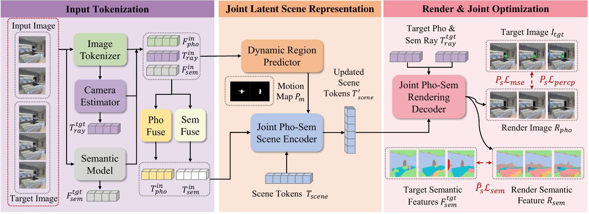
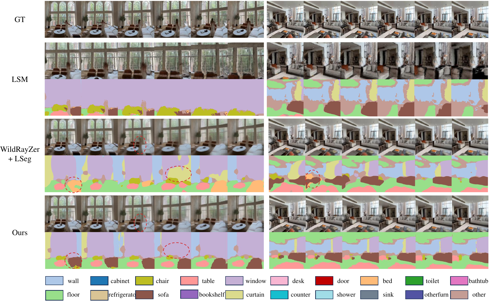
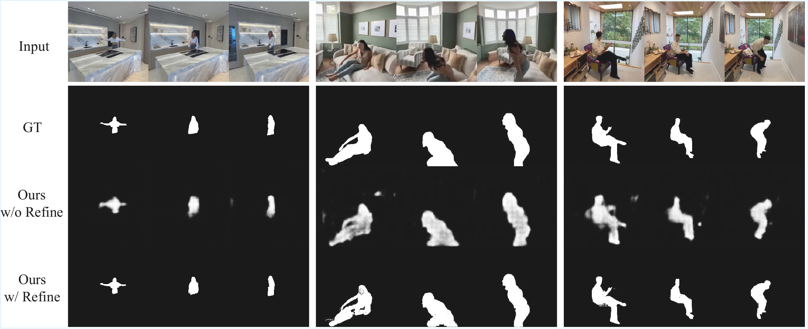

Dynamic-Robust Photometric-Semantic Reconstruction for Open-Vocabulary 3D Scene Understanding
1ShanghaiTech University
2Institute of Automation, Chinese Academy of Sciences
3The Chinese University of Hong Kong
4Deepeleph Intelligent Technology
* Corresponding author
ECCV 2026
Abstract
The integration of novel view synthesis (NVS) and open-vocabulary segmentation (OVS) has recently yielded powerful feed-forward 3D foundation models. However, their inherent reliance on static-scene assumptions leads to severe misalignment of spatial features in unconstrained dynamic environments. To bridge this critical gap, we propose SPAR, a novel joint semantic-geometric encoding architecture that explicitly isolates transient dynamic noise prior to latent space aggregation. Furthermore, we introduce a dynamic-region-aware end-to-end training paradigm that structurally couples motion estimation with multi-view visual and semantic learning. This unified approach enables the network to inherently resolve motion conflicts and distill multi-view consistent, temporally stable scene representations from dynamic inputs.
Extensive experiments on the challenging D-RE10K benchmark demonstrate that SPAR achieves state-of-the-art performance. Our end-to-end approach yields a PSNR of 22.15 dB and 23.33 dB given only 3 and 4 input views, respectively. Despite being trained in a self-supervised manner, our model achieves an mIoU of 88.5% for motion mask prediction. Semantic synthesis learning also consistently enhances photometric fidelity in novel-view rendering.
Video Results
Each scene shows synchronized novel-view image synthesis and open-vocabulary semantic segmentation along the same camera trajectory.
Scene 02
Scene 03
Scene 04
Scene 05
Scene 06
Scene 07
Scene 08
Scene 09
Scene 10
Scene 11
Scene 12
Scene 13
Scene 14
Scene 15
Scene 16
Scene 17
Scene 18
Scene 19
Scene 20
Method

Results
Dynamic Novel-View Synthesis on D-RE10K
| Input Views | PSNR ↑ | SSIM ↑ | LPIPS ↓ |
|---|---|---|---|
| 2 | 19.97 | 0.627 | 0.339 |
| 3 | 22.15 | 0.702 | 0.283 |
| 4 | 23.33 | 0.739 | 0.263 |


BibTeX
@inproceedings{cai2026spar,
title = {Dynamic-Robust Photometric-Semantic Reconstruction for
Open-Vocabulary 3D Scene Understanding},
author = {Cai, Boyu and Yang, Li and Xu, Yan and Liu, Wei and
Liu, Nian and Zhang, Sikui and Wang, Yan and
Yuan, Chunfeng and Hu, Weiming},
booktitle = {European Conference on Computer Vision (ECCV)},
year = {2026}
}Acknowledgements
This project builds upon LVSM, RayZer, and WildRayZer. We thank their authors for releasing the code.